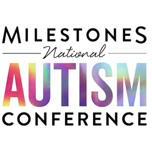

Quality is a conversation. Bridging dev, product, and business through clarity — not just bug reports. From conference talks to milestone retrospectives, sharing knowledge out loud is part of the job.
